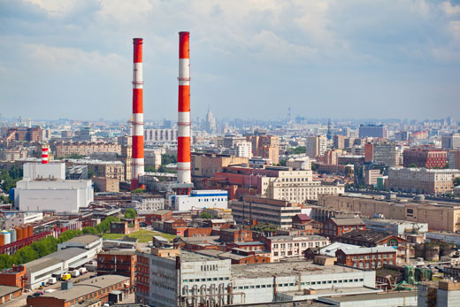
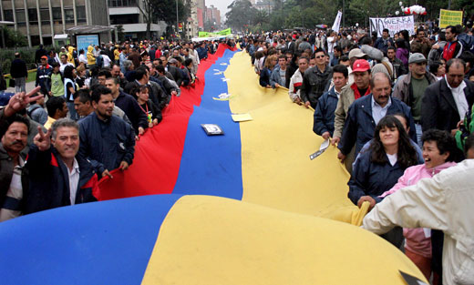
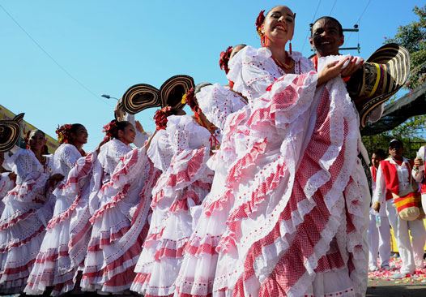
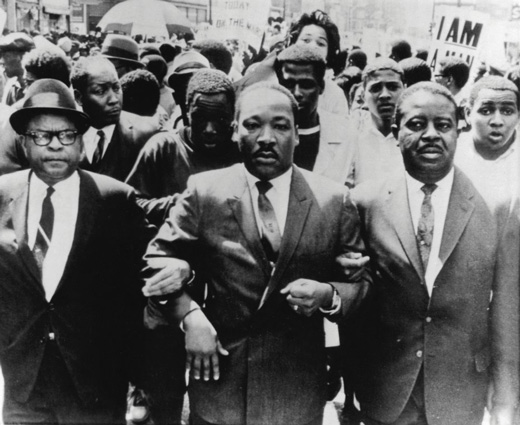

El ser humano es un ser social por naturaleza, ya que desde sus orígenes ha vivido en comunidad para cooperar y protegerse. De no ser así, no hubiese sido posible su sobrevivencia. Aunque el caso humano no es excepcional; casi todas las especies animales forman manadas, rebaños y grupos.
-
01
La sociedad
Open or CloseLas distintas sociedades se organizan de una forma similar. Todas cuentan con un sistema económico y productivo, un sistema político y jurídico, una cultura compartida y un sistema de valores propio.
Cada uno de estos elementos define la particularidad de las sociedades y la forma como estas se relacionan entre sí. ¿Alguna vez te has preguntado por qué vivimos en una sociedad democrática, compartimos ciertos gustos y consignamos en la Constitución Política las leyes generales con las que nos regimos?
Se vive en sociedad porque de ella depende la sobrevivencia y la evolución de la humanidad. Todas las cosas existentes son producidas por grupos organizados: los alimentos y las edificaciones, entre otras. De igual forma, las normas y lo que se considera apropiado o incorrecto de la vida en comunidad ha sido establecido por distintos grupos sociales a lo largo de la historia.
Las claves para comprender una sociedad
- Un sistema económico y productivo: conjunto de instituciones y relaciones sociales que permiten evidenciar la forma como se estructura la producción, distribución y consumo de los bienes en una sociedad.
- Un sistema político y jurídico: conjunto de instituciones, relaciones y normas que dan cuenta de la manera como se ejerce la política en un territorio concreto.
- Una cultura compartida y un sistema de valores propio: conjunto de normas, costumbres y símbolos comunes que han sido aprehendidos socialmente, lo que ha generado identidad y ha llevado a las personas a actuar de una determinada manera.
Profundiza
01.1Los tipos de sociedad
Las sociedades varían en función del tiempo y del lugar. De acuerdo con su estructura jerárquica, se puede distinguir entre sociedades estáticas (determinadas por el nacimiento) y sociedades dinámicas (establecidas por el nivel de riqueza).
La sociedad tradicional de India es un buen ejemplo de sociedad estática. Esta se rige por un sistema de castas organizado de forma jerárquica. Las castas tienen un origen hereditario y están conformadas con base en los oficios. Hoy, constitucionalmente, este sistema ha sido abolido; sin embargo, en la práctica se mantiene el orden jerárquico de las castas.
Si se tiene en cuenta la estructura económica y social que adoptan, se pueden distinguir tres modelos de sociedad: tradicionales, industriales (o modernas) y posindustriales (o posmodernas).
Los tipos de sociedad MODELO DE SOCIEDAD CARACTERÍSTICAS Sociedad tradicional - Son sociedades rurales.
- Las principales actividades económicas son las del sector primario.
- Las comunidades suelen ser reducidas.
- Habitan en pequeños pueblos y aldeas.
- Perviven las antiguas tradiciones y tienen mentalidades muy estables.
- Son propias de países poco desarrollados.Sociedad industrial (o moderna) - Experimentan un crecimiento importante en las ciudades, debido a la expulsión de población rural.
- Predominan actividades del sector secundario como la industria.
- Son propias de países recientemente industrializados.Sociedad posindustrial (o posmoderna) - Producción orientada a la fabricación de productos relacionados con las nuevas tecnologías.
- Amplia gama de servicios relativos a la información, la investigación y el conocimiento.
- Es propia de los países desarrollados.En un país se pueden presentar al mismo tiempo características de distintos tipos de sociedades. Sin embargo, es fundamental precisar las características que se destacan para comprender la forma como se determina la sociedad que habita un país.
En Colombia, por ejemplo, aunque siguen existiendo grupos sociales con prácticas tradicionales como las comunidades indígenas y campesinas, la mayor parte de las actividades sociales, políticas, económicas y culturales se concentran en las ciudades. De igual modo, es un país recientemente industrializado, pero su base económica se centra en el sector primario. La sociedad colombiana tiene rasgos tradicionales y modernos.
Las sociedades tradicionales presentan una forma de organización política, económica y cultural que se mantiene como en las épocas anteriores a la Revolución Industrial. En la imagen se observa un campesino de Salento, Quindío, donde se conservan las formas tradicionales de cultivo.
Las sociedades industriales o modernas son aquellas cuya forma de organización política, económica y cultural es propia del modelo capitalista. El sector secundario es el que genera más puestos de trabajo y los mayores aportes a la economía.
En las sociedades posindustriales o posmodernas, el sector terciario ocupa a más de la mitad de la población. El comercio, las actividades financieras, las telecomunicaciones, la investigación y la prestación de servicios son las áreas de la economía que más se destacan.
Profundiza
01.2La cultura
La cultura es un conjunto de costumbres, conocimientos y formas de vida de un grupo de personas. Es determinante a la hora de formar la identidad del individuo, por un lado, y del colectivo del que forma parte, por otro.
Uno de los rasgos propios de la sociedad colombiana es la diversidad, favorecida por la existencia de grupos originarios, la presencia de razas de otros continentes como la raza negra, las influencias culturales de los inmigrantes, los medios de comunicación y el turismo.
Es importante valorar la pertenencia a una sociedad compuesta por diversos grupos sociales.
01.2.1La diversidad cultural
La diversidad cultural está determinada por la presencia de varios grupos sociales con costumbres, prácticas, formas de lenguaje y expresiones distintas. Esa diversidad se presenta en los ámbitos mundial, regional y local, por lo cual es muy común que en un mismo territorio convivan grupos heterogéneos.
Existen así varios rasgos que permiten caracterizar la identidad de un grupo social; sin embargo, los más importantes en el campo histórico han sido la lengua, la religión y las tradiciones. Esta presencia de concepciones del mundo disímiles, en ocasiones, ha posibilitado el reconocimiento de las mismas por parte de otros grupos sociales, en los que, a partir del respeto a la diferencia, se considera fundamental la igualdad de todos los seres humanos.
En otras situaciones se han presentado conflictos culturales generados por diferencias en las formas de pensar y concebir el mundo. Por ejemplo, en India y Pakistán, desde décadas atrás, existe un conflicto religioso entre hindúes y musulmanes, que ha generado diversas acciones violentas que han cobrado miles de vidas. Otra situación que produjo un conflicto cultural fue el proceso de colonización de América, en el que las creencias de los pueblos originarios fueron homogeneizadas de manera violenta, bajo los preceptos de las culturas española, inglesa y portuguesa.
La diversidad
La diversidad cultural, su reconocimiento y protección, tienen un valor inmenso en las sociedades democráticas y pluralistas. El respeto de la misma permite la existencia de creencias diversas dentro de una misma sociedad.

La diversidad cultural de los países latinoamericanos se refleja en la presencia de numerosos grupos, entre ellos, pueblos originarios que mantienen sus costumbres, lengua y creencias. En la imagen, el mercado al aire libre de Chichero, en Perú.
01.2.2La cultura en el mundo globalizado
La globalización económica ha posibilitado la difusión de los valores propios de la sociedad occidental y de la sociedad de consumo a través de los medios de comunicación. Así, se han logrado fabricar, a gran escala, estilos de vida, formas de pensar e ideales; a eso se le conoce como cultura de masas. Esta comenzó en los "felices años veinte" en Estados Unidos y se interrumpió con la Gran Depresión (década de 1930).
Recuerda
En los años que siguieron a la Segunda Guerra Mundial (1939-1945), se produjo una recuperación de la producción y un incremento de los sueldos. Esto hizo que el consumo aumentara de una forma nunca antes vista. La crisis económica de la década de 1970 llevó a los publicistas a buscar nuevas formas de promover el consumo, con lo que se introdujo la idea de "necesidad".
Con una idea de "necesidad", directamente relacionada con el consumo de productos, la industria cultural se proyectó en diversos escenarios. En las tres décadas siguientes, Hollywood abrió sus puertas a la producción de películas que buscaban llegar de forma masiva al mercado mundial; de igual forma, los medios de comunicación introdujeron las secciones de farándula, moda y entretenimiento.
Esta industria se caracterizó por difundir el estilo de vida estadounidense (American Way Life) y proyectar valores comunes que favorecieron la homogenización cultural. Tal forma de extender una única forma de ser ha provocado en diversas ocasiones conflictos culturales. La opción ideal sería adoptar los aspectos positivos de la cultura de masas, pero sin perder las raíces culturales de cada lugar.
La cultura masiva
La sociedad de masas y la sociedad de consumo se relacionan con la globalización económica, que ha contribuido a la difusión de los valores propios de la sociedad occidental a través de los medios de comunicación. Esto ha dado lugar a un proceso de progresiva aculturación mundial que impone los mismos comportamientos, valores y actitudes a través de medios como la televisión, el cine o internet. Es lo que se conoce como cultura de masas.
Hoy los medios de comunicación han logrado posicionarse como un poder importante en la sociedad. Por medio de la generación de entretenimiento e información, así como del amplio acceso a buena parte de la población mundial, posibilitan la reproducción de un conjunto de ideas y conductas que se posicionan como únicas. Esta situación evidencia que la cultura de masas tiende a la homogeneidad de gustos, pensamiento y acción.
01.3Consolidación
Actividades para consolidar lo que has aprendido en esta sección.
Practica
-
02
La mezcla de culturas
Open or CloseLas sociedades no están conformadas por una sola etnia, pues se han consolidado a partir de procesos de mezcla (hibridación) cultural de grupos sociales con herencias diferentes. A esto se le conoce como multiculturalismo, y expresa la convivencia de culturas humanas variadas en una misma sociedad.
Todas las sociedades conviven con una gran variedad de costumbres, valores, formas de pensar, sentir y actuar, que con el paso de los siglos han configurado su identidad.
02.1Los orígenes de las sociedades occidentales
Es difícil encontrar culturas que hayan permanecido intactas a la largo del tiempo. Las relaciones entre los distintos grupos sociales permitieron el nacimiento y desarrollo de las culturas contemporáneas.
La cultura occidental ha tenido muchas influencias y se ha consolidado con el paso de los siglos. Tanto así que su concepción del mundo y de la vida se ha establecido en grandes territorios. La grecorromana, la germánica y la hebreo-cristiana se consideran las tres principales herencias de la cultura occidental.
Aunque, en un principio, el término hacía referencia de manera específica al continente europeo, en la actualidad se utiliza para nombrar a los países que han sido homogenizados por la globalización y aquellos que cuentan con la herencia de los principios judeocristianos.
Todas las formas actuales de organización en occidente, constituyen un complejo cultural en el cual la corriente judeocristiana estableció el modo de vida que debían llevar las personas, mientras que las herencias grecorromana y germana marcaron las características raciales, las formas de organización político-jurídica y las corrientes espirituales y filosóficas.
Cada uno de los principios políticos y jurídicos de la cultura occidental se originó en la necesidad de resolver problemas cotidianos. Ejemplos de ello son las leyes que sientan las bases de los derechos y deberes de los ciudadanos, así como las reglas del comercio.
Una de las herencias culturales con más peso en el mundo occidental es la hebreo-cristiana. La Torre de David en Jerusalén fue construida en el siglo II a. C. Hoy funciona como un museo que muestra parte de la historia de la cultura hebreo-cristiana.
Una cuarta herencia
En una parte de Europa existe una herencia árabe de gran relevancia. Se puede hablar incluso de una cuarta herencia. La influencia musulmana se manifestó en la incorporación de nuevas especies agrícolas que ampliaron la gastronomía europea, en el enriquecimiento de los idiomas (en especial el español), en la arquitectura, las artes y las matemáticas, sobre todo el álgebra.
La cultura oriental, relacionada principalmente con los territorios de China, India y Japón, se ha caracterizado por un fuerte componente espiritual del que parten el resto de aspectos de la vida social, así como el seguimiento de tradiciones milenarias.
Obedecer al ideal de una cultura homogénea genera políticas destinadas al exterminio y la discriminación, por eso es importante aprender de lo diferente antes que imponer una única forma de pensamiento y acción.
Una muestra de la diversidad cultural en el mundo son las obras maestras del patrimonio cultural inmaterial de la humanidad, consagradas como tal por la Organización de las Naciones Unidas para la Educación, la Ciencia y la Cultura (Unesco). Su designación tiene como objetivo generar mayor conciencia frente a la diversidad mundial y la necesaria protección de la misma.
La Unesco incluye en su lista de patrimonios de la humanidad fiestas, saberes, obras artísticas, representaciones y espacios culturales de gran significación histórica. Pirámides de Teotihuacán, México.
02.2Las herencias múltiples
Dado que las sociedades se han constituido a partir de múltiples herencias culturales, se puede hablar de pluriculturalidad. Este conjunto de elementos permite que las personas se identifiquen y caractericen como miembros de un país, y al mismo tiempo se diferencien del resto de culturas.
La diferencia no significa que unas culturas sean más importantes que otras. Si se acepta que no existe jerarquía entre ellas, se puede comprender que todas son merecedoras de respeto y tienen derecho a desarrollarse y mantenerse. En la medida en que se respeten, se reconozcan y se incluyan las tradiciones de los grupos que conforman una sociedad, es posible ampliar la democracia.
La democracia es fundamental para todas las sociedades pues implica la libertad y la igualdad de todos los individuos. Una sociedad democrática promueve la toma de decisiones colectivas e incluye todas concepciones del mundo de quienes la componen.
Pluralismo
El pluralismo permite que las personas se expresen con libertad, dialoguen y cooperen. La diversidad de ideas, costumbres y creencias posibilita el debate y permite, a pesar de los desacuerdos, tomar decisiones.
02.3Multiculturalidad e interculturalidad
Existen algo más de 7.400 millones de personas en el mundo, cada una irrepetible y perteneciente a una cultura con la que se identifica. La diversidad se expresa en la multiplicidad de opciones y posibilidades de ver el mundo y relacionarse con el resto de la sociedad.
La multiculturalidad hace referencia a la presencia e interacción de diversas culturas que comparten un mismo territorio, se reconocen como distintas y se relacionan de manera igualitaria o a veces excluyente.
Por otra parte, la interculturalidad, consiste en reconocer la diferencia entre culturas, comunicarse, interactuar, aprender del otro, complementarse, valorar y respetar concepciones diferentes del mundo.
Bolivia cuenta alrededor de 40 grupos étnicos y 37 idiomas oficiales. El Estado tiene un carácter plurinacional y más de 60% de la población es indígena, lo que la convierte en la más numerosa de toda América en un solo país.
02.4Consolidación
Actividades para consolidar lo que has aprendido en esta sección.
-
03
Colombia, una nación multiétnica y pluricultural
Open or CloseLa diversidad cultural no se presenta solo entre países, sino también dentro de ellos y Colombia no es la excepción. Indígenas, afrodescendientes, gitanos, mestizos, mulatos, judíos, árabes, entre otros, hacen parte de la sociedad colombiana, que se rige por las mismas normas y principios.
Un avance fundamental para el reconocimiento de la diversidad étnica y cultural en el país fue la Constitución Política redactada en 1991 a través de un proceso de Asamblea Constituyente que convocó a diversos sectores que componen la sociedad colombiana. Por tal razón, se le conoce como la "Constitución de los derechos humanos".
Movimientos políticos y partidos políticos de distinta orientación ideológica se dieron a la tarea de redactar una nueva Constitución que remplazara la de 1886. Por medio de comisiones permanentes se aprobaron artículos que regularon los temas políticos, sociales, económicos, ecológicos y culturales del país.
Es esencial recordar que la Constitución Política de Colombia reconoce una serie de derechos a las comunidades indígenas y afrodescendientes.
El proceso de consolidación de los Estados nacionales es complejo, aún más en un pueblo tan diverso como el colombiano. La Constitución Política de 1991 buscó reconocer esta pluralidad al generar una normatividad que dé razón de las diferencias.
03.1La diversidad étnica
La composición de la población colombiana es producto de la mezcla de tres grupos sociales principales: indígenas, como población originaria del territorio americano; europeos, especialmente españoles que llegaron a América como colonizadores y africanos, traídos como esclavos a América. De igual modo, otros grupos llegaron al territorio nacional por medio de procesos migratorios más actuales, como los gitanos, los judíos y los árabes.
La mezcla de la que somos herederos muestra el carácter multiétnico de la sociedad colombiana. Con base en el último censo nacional, la población colombiana cuenta con diversas pertenencias étnicas. El siguiente cuadro muestra cuáles son las etnias reconocidas y cuál es el porcentaje aproximado de población que se identifica con cada una de ellas:
ETNIA PORCENTAJE Indígena 3,5% Gitanos o rom 0,01% Raizales del archipiélago de San Andrés 0,07% Palenqueros de San Basilio 0,02% Negros, mulatos, afrocolombianos 10,5% Sin pertenencia étnica 85% Profundiza
Composición étnica
Se denomina raizales a los nacidos en las islas de San Andrés, Providencia y Santa Catalina. Son descendientes de europeos y pobladores nativos de las islas. Hablan una lengua propia denominada creole, practican la religión bautista y tienen una relación cultural fuerte con los pueblos antillanos.
Por su parte, los palenqueros son los pobladores del corregimiento de San Basilio de Palenque, ubicado en el municipio de Mahates, en el departamento de Bolívar. Descienden de los cimarrones, quienes desarrollaron una fuerte resistencia anticolonial. Su lengua es el criollo.
Así como existen personas que se autorreconocen dentro de una etnia concreta, hay otras sin pertenencia étnica específica, ya que son resultado de un amplio proceso de mestizaje. Este se refleja en las tradiciones, las formas de cultivar la tierra, la gastronomía, el ocio y artes como la literatura, el teatro y la pintura.
03.2La diversidad cultural
La riqueza cultural de Colombia es el resultado de las creaciones inmateriales y materiales de los diversos grupos de población que la componen; están presentes en las ideas, las creencias, las letras, las artes, las ciencias, los conocimientos ancestrales, las tradiciones, el folclor, las lenguas y las construcciones materiales, entre muchas otras.
La magnitud de esta riqueza es tal, que varios productos orales e inmateriales de nuestra sociedad han sido catalogados por la Unesco como patrimonio intangible de la humanidad, título con el cual se busca salvaguardar componentes esenciales de la diversidad cultural y de la expresión creativa de los pueblos del mundo.
El carnaval de Barranquilla es la fiesta cultural más importante de Colombia. En él se expresan todas las manifestaciones culturales y folclóricas de la costa Caribe colombiana. La Unesco lo declaró "Obra Maestra del Patrimonio Oral e Intangible de la Humanidad" en 2003.
En Colombia, una de las estrategias más significativas a favor de la diversidad cultural es la de los colegios y universidades interculturales creados a partir de las necesidades de las comunidades indígenas. Estos proyectos buscan generar escenarios educativos alternativos que permitan procesos incluyentes y diversos.
Algunas de estas experiencias de educación superior intercultural son: la Universidad Indígena Intercultural Jacinto Ortiz, la Universidad Autónoma Indígena Intercultural y la Universidad Intercultural del Suroccidente Colombiano.
Otra iniciativa es la de los Consejos Comunitarios de Comunidades Negras y Resguardos Indígenas. Se trata de escenarios fundamentales para preservar las tradiciones y la cultura de las minorías en Colombia.
Una tercera experiencia es el establecimiento de los grupos étnicos en el Censo Nacional. El último censo, llevado a cabo en 2005, amplió su caracterización de la población colombiana al incluir las particularidades de los grupos poblacionales minoritarios que en oportunidades anteriores debían autorreconocerse bajo denominaciones con las cuales no se sentían identificados.
Como mandato constitucional, el Estado colombiano está obligado a incluir dentro de sus políticas, planes y proyectos, iniciativas a favor de la diversidad. Para 2005, el Departamento Administrativo Nacional de Estadística (DANE) modificó la clasificación de los grupos étnicos, al ampliar las opciones de autoidentificación de la población.
03.3Consolidación
Actividades para consolidar lo que has aprendido en esta sección.
-
04
Diversidad y conflicto
Open or CloseLas sociedades siempre han buscado resolver sus inconvenientes. Dado que los seres humanos somos diversos y contamos con intereses y posturas distintas, es usual que se presenten situaciones conflictivas.
La pobreza es una de las condiciones que más genera conflictos sociales. Según el Programa de Naciones Unidas para el Desarrollo (PNUD), cerca de la mitad de la población mundial vive con menos de dos dólares al día, lo que los sitúa en condición de pobreza. En Nepal cerca de 50.000 infantes mueren cada año, 60% de ellos por malnutrición.
En la sociedad contemporánea existen conflictos que cuestionan las estructuras económicas, sociales, políticas y culturales sobre las que se ha edificado el mundo como lo conocemos hoy. Las causas de los conflictos están relacionadas con:
- Las desigualdades sociales.
- La pobreza de unos grupos sociales y la riqueza excesiva de otros.
- Los problemas de convivencia.
- La discriminación y la marginalidad.
- El racismo y la xenofobia.
En el caso colombiano, algunos de los conflictos sociales más sentidos son: la falta de empleo, los bajos salarios y el acceso limitado a salud, educación, vivienda y tierra, entre otros. Sin embargo, dados los diversos intereses que existen en estos conflictos y la falta de resolución pacífica de los mismos, el conflicto social ha desembocado en formas violentas como el conflicto armado.
El conflicto social
El conflicto es inherente al desarrollo de las sociedades: juega un papel fundamental en cuanto permite llegar a acuerdos o fijar posturas contrarias que distancian; es decir, hace posible el cambio social. Sin embargo, la solución de estos conflictos puede estar marcada por una vía pacífica centrada en el diálogo o, al contrario, puede intentar ser resueltos por medio de la violencia.
Profundiza
04.1Las transformaciones sociales
A lo largo de las últimas décadas, la sociedad ha experimentado una serie de transformaciones:
- Económicas: la mayoría de la población vive en ciudades y la tecnología contribuye al desarrollo de una sociedad de la información y del conocimiento. Las nuevas tecnologías han creado novedosas formas de relación: SMS, chats y redes sociales. Sin embargo, se mantienen altos niveles de desigualdad debido a la concentración de la riqueza.
- Sociales: la mujer accede a estudios superiores y a puestos de dirección y responsabilidad. Su incorporación masiva al mercado laboral ha transformado el modelo de familia. Los grupos minoritarios han logrado un reconocimiento político que garantiza sus derechos.
- Ideológicas: los medios de comunicación de masas (televisión y cine) han propiciado la difusión del modelo de sociedad de consumo. No obstante, han surgido movimientos de voluntariado social, ecologistas, antiglobalización, etc.
La forma de comunicarnos ha cambiado de modo radical. En la actualidad, el desarrollo de nuevas tecnologías hace posible disminuir las distancias y los tiempos, con lo que se han creado formas diversas de relacionarnos.
Las transformaciones de las sociedades son resultado de la necesidad de cambio que expresan los grupos sociales; en tal sentido, pueden modificar de manera apreciable o de modo parcial las estructuras sobre las que se sustenta la vida social. Los elementos estructurales son precisamente los cimientos que soportan la sociedad, por lo cual el cambio social puede modificarlos de forma radical por medio de una revolución, o alterarlos de manera parcial a través de las reformas.
Una de las formas históricas mediante las cuales diversos grupos sociales (campesinos, trabajadores, indígenas, mujeres, entre otros) han buscado los cambios de la sociedad ha sido la movilización y la huelga. A través de estas estrategias han buscado reivindicar sus derechos, exigiendo a las instituciones estatales el mejoramiento de sus condiciones de vida.
Profundiza
04.1.1El reconocimiento de los derechos
La Declaración Universal de los Derechos Humanos fue promulgada en París el 10 de diciembre de 1948 por la Asamblea General de las Naciones Unidas. Es un texto de 30 artículos que busca orientar la acción de los países en la defensa y protección de los derechos humanos. Afirma que todos los seres humanos somos iguales ante la ley y tenemos los mismos derechos.
¿Qué son los derechos humanos?
Según las Naciones Unidas, son derechos inherentes a todos los seres humanos sin distinción alguna de nacionalidad, de lugar de residencia, sexo, origen nacional o étnico, color, religión, lengua, o cualquier otra condición.
Los antecedentes de esta declaración son, principalmente, la Declaración de los Derechos del Hombre y el Ciudadano, redactada durante la Revolución Francesa y el Convenio de Ginebra, en el que se prohíbe toda forma de esclavitud.
La Declaración Universal de los Derechos Humanos se promulgó en medio de la devastación en la que quedó el mundo luego de la Segunda Guerra Mundial (1939-1945), por lo cual busca orientar sobre el respeto a la diversidad.
No basta con la normatividad; el respeto por lo diferente debe ser un valor inculcado en cada uno de los ámbitos de la sociedad. La familia, el colegio y el sitio de trabajo deben ser espacios que hagan posible la existencia de lo diverso y que permitan una relación equitativa entre las culturas existentes. Una posible estrategia es generar prácticas comunicativas incluyentes que permitan dar razón de la diversidad que existe.
04.1.2La lucha por la igualdad
En la historia de la humanidad han existido personajes que han luchado por el respecto a la diversidad y la defensa de los derechos humanos. Desde sus propias realidades, y a causa de procesos de exclusión social y violencia política, lideraron movimientos para acabar con el racismo, la segregación y reivindicar el derecho a la igualdad.
Martin Luther King. Estadounidense afroamericano que lideró el Movimiento por los Derechos Civiles en su país. Su objetivo fue eliminar la segregación racial existente mediante la generación de conciencia sobre la igualdad de derechos de todos los seres humanos por medio de la desobediencia civil y la no violencia. Nació en 1929 y fue asesinado el 4 de abril de 1968.

Nelson Mandela. Activista que luchó contra el apartheid sudafricano y enfrentó el racismo institucionalizado en su país durante décadas. Luego de estar preso durante 27 años, se convirtió en presidente de Sudáfrica de 1994 a 1999. Hizo grandes cambios que permitieron la igualdad de condiciones para los ciudadanos de raza negra. Al morir, en 2013, dejó un legado inmenso respecto a la defensa de los derechos humanos.

Rigoberta Menchú. Mujer indígena guatemalteca defensora de los derechos humanos, nacida en 1959. Luego de que varios miembros de su familia fueran asesinados, emprendió una campaña pacífica de denuncia de las injusticias cometidas contra indígenas y campesinos en Guatemala. Ha sido galardonada con diversos premios, entre ellos, el Premio Nobel de la Paz en 1992.
Mahatma Gandhi. Pensador y activista social nacido en India en 1869. Batalló en busca de la independencia de su país, que por entonces estaba sometido a Inglaterra. Uno de sus principales métodos de lucha fue la huelga de hambre. Rechazó de manera radical la lucha armada y la violencia. Murió en 1948, asesinado por un fanático hinduista.
04.2El Estado de bienestar y el Estado social de derecho
Tras la Segunda Guerra Mundial (1939-1945) se empezó a fomentar en Europa un tipo de sociedad en la que el Estado establecía la igualdad de oportunidades entre todos los ciudadanos al margen de sus ingresos y les garantizaba una mejor calidad de vida. Esto fue posible gracias a las reivindicaciones sociales ganadas por los trabajadores durante las primeras décadas del siglo XX.
El Estado de bienestar trata de garantizar una mejor calidad de vida y servicios básicos óptimos a todos los ciudadanos. Se desarrolló principalmente en Europa, pero adoptó distintos modelos de acuerdo con el país. Su objetivo es regular cuestiones como la vivienda, la salud, el empleo y la educación.
Los bienes y servicios públicos garantizados en el Estado de bienestar
- La construcción de infraestructuras.
- El transporte público.
- La sanidad y la educación.
- Los servicios de previsión social (pensiones, subsidios, etc.).
Para mantener este sistema, el Estado necesita ingresar dinero en sus arcas. Puede hacerlo a través de los impuestos recaudados y de las cotizaciones a la seguridad social, fuentes que sustentaron el desarrollo del modelo hasta 1973. Sin embargo, las condiciones de vida que habían sido mejoradas a la población, se vieron quebrantadas debido a las crisis económicas mundiales de 1973 y 1981.
Tal situación marcó un punto de quiebre del Estado de bienestar, que volvió a visibilizarse en el marco de la crisis económica iniciada en 2008 en diferentes países europeos. Hoy se teme que ese Estado reduzca de manera drástica sus competencias o, incluso, pueda desaparecer.
Para el caso colombiano, en el primer artículo de la Constitución Política, promulgada en 1991, se determina que Colombia es un Estado social de derecho. Esto implica que el Estado tiene como prioridad proteger y garantizar los derechos de los ciudadanos, en busca de la justicia social y la dignidad humana. A diferencia del Estado de bienestar, que se crea como una política económica y social en una situación de crisis, el Estado social de derecho es más integral, al incluir elementos políticos, ideológicos y jurídicos que marcan la razón de ser del Estado.
La Constitución Política de Colombia, promulgada en 1991, define el carácter del Estado social de derecho y el papel de las instituciones.
04.3Consolidación
Actividades para consolidar lo que has aprendido en esta sección.
-
05
Competencias
Open or ClosePon a prueba tus capacidades y aplica lo aprendido con estos recursos.
-
Fin de unidad:
Open or Close
repaso